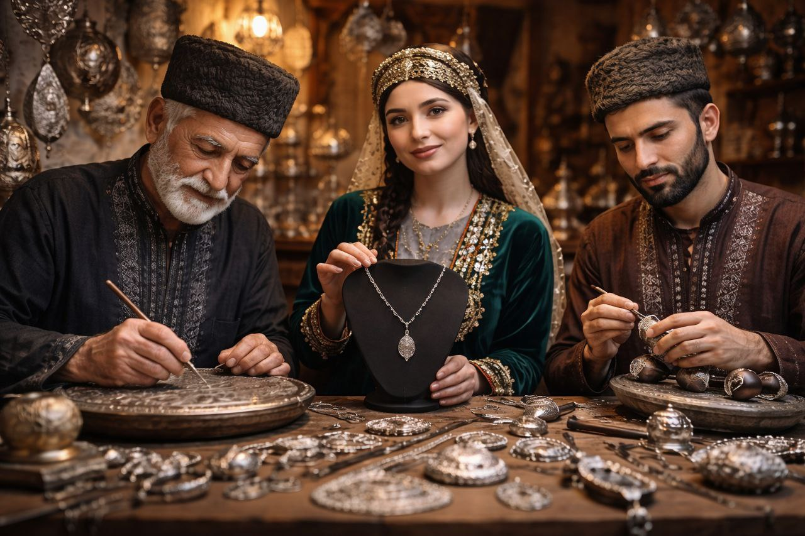
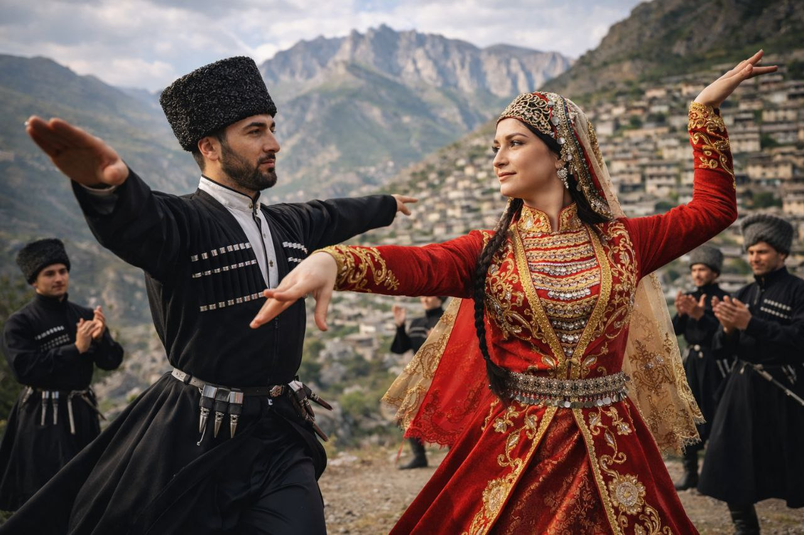
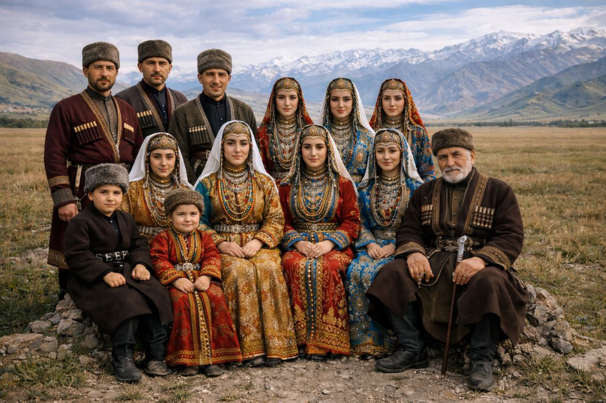
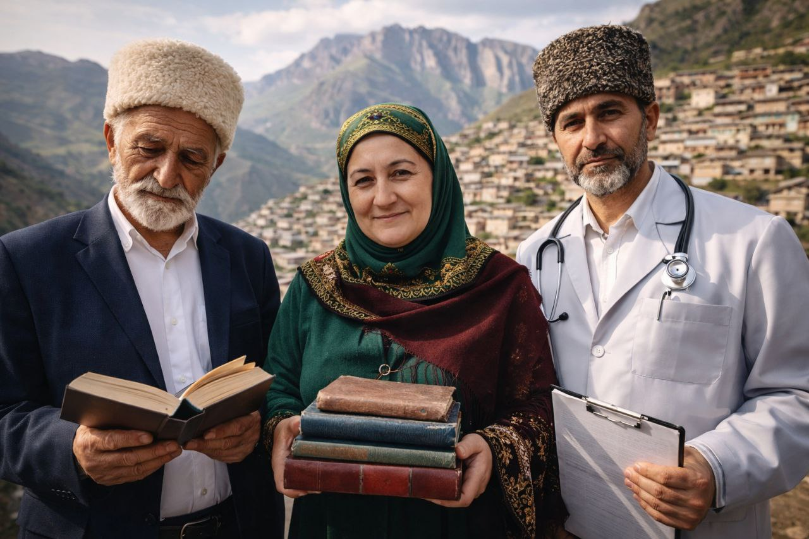
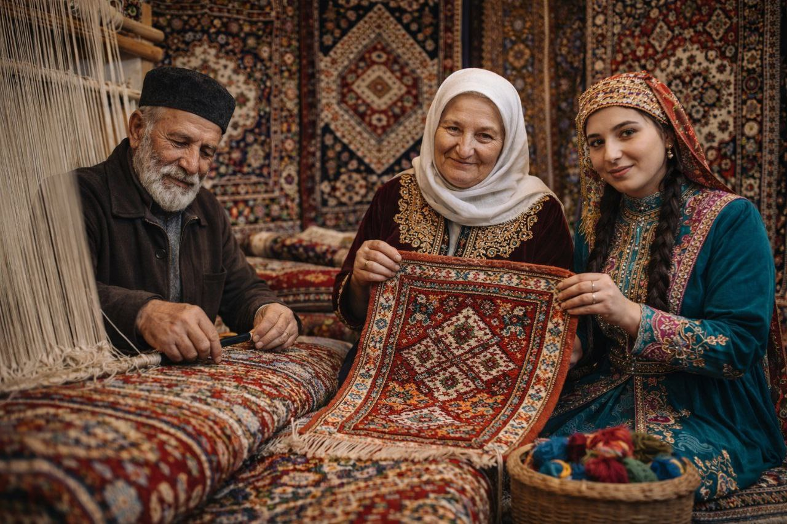

Народы Дагестана
Земля, где каждое ущелье говорит на своём языке, а гостеприимство объединяет всех
Дагестан — это уникальный регион, где на относительно небольшой территории проживает более 60 народов и этнических групп. Каждый народ бережно хранит свой язык, традиции, обычаи и культуру, передавая их из поколения в поколение.
Многовековое соседство научило народы Дагестана взаимоуважению и толерантности. Здесь никогда не было национальной или религиозной розни — горы и общая история сплотили людей крепче любых границ.
«Если ты выстрелишь в Дагестане, эхо ответит тебе на тридцати языках»
— Расул Гамзатов, народный поэт ДагестанаЯзыковое разнообразие
Три великие языковые семьи сплелись в мозаику дагестанской культуры
Нахско-дагестанские
Древнейшие языки Кавказа
Автохтонные языки, формировавшиеся тысячелетиями в горных ущельях. Отличаются сложной фонетикой и уникальной грамматикой.
Тюркские
Языки степных народов
Пришли с тюркскими племенами, связывавшими горы и степи. Близки к азербайджанскому и турецкому языкам.
Индоевропейские
Языки мировой семьи
Русский язык стал lingua franca Дагестана, объединяющим все народы. На нём создана богатая дагестанская литература.
Крупнейшие народы

Аварцы
Маарулал • Самый многочисленный народАварцы (самоназвание — маарулал) составляют около 30% населения Дагестана. Проживают преимущественно в горных районах. Известны как искусные строители, воины и поэты. Аварский язык относится к нахско-дагестанской семье.

Даргинцы
Дарган • Народ мастеровДаргинцы — второй по численности народ Дагестана. Славятся своими ремёслами, особенно обработкой металла и ювелирным делом. Село Кубачи, населённое даргинцами, известно на весь мир своими серебряными изделиями.

Лезгины
Лекь • Хранители танцаЛезгины — один из древнейших народов Кавказа. Именно от их названия произошло слово «лезгинка» — знаменитый кавказский танец. Лезгины известны своим гостеприимством, отвагой и строгим соблюдением адата (кодекса чести).

Кумыки
Къумукълар • Степной народКумыки — тюркский народ, проживающий на равнине. Исторически были связующим звеном между горцами и степными народами. Обладают богатой литературной традицией, первые письменные памятники датируются XVII веком.

Лакцы
Лак • Народ учёныхЛакцы компактно проживают в центральной части горного Дагестана. Славятся высоким уровнем грамотности и тягой к знаниям. В советское время лакцы дали Дагестану множество учёных, врачей и педагогов.

Табасараны
Табасаран • Мастера ковраТабасараны — народ, прославившийся своим ковроткачеством. Табасаранские ковры занесены в Книгу рекордов Гиннесса как самые сложные по орнаменту в мире. Их язык также считается одним из самых сложных.
Единство в многообразии
Дагестан — это живой пример того, как разные народы могут жить в мире и гармонии, сохраняя свою уникальность и взаимно обогащая друг друга.
Взаимоуважение
Вековые традиции толерантности и уважения к соседям
Гостеприимство
Гость священен независимо от национальности
Культурный обмен
Народы обогащают друг друга традициями
Мирное сосуществование
Никогда не было межнациональных конфликтов
Этническая карта Дагестана
Нажмите на регион, чтобы узнать о населяющем его народе
Выберите регион на карте, чтобы узнать о народе